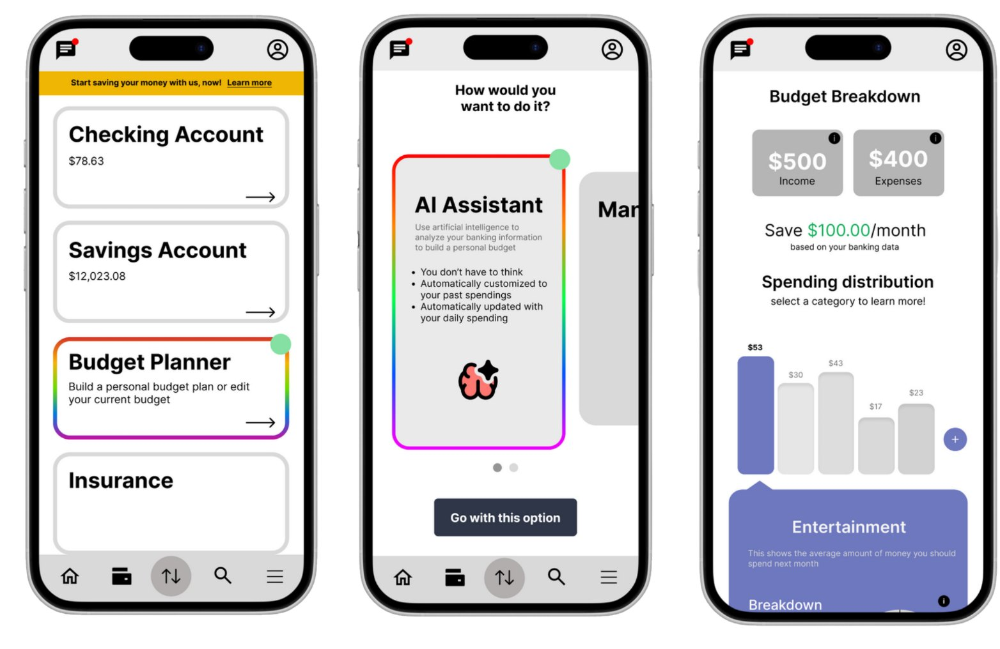
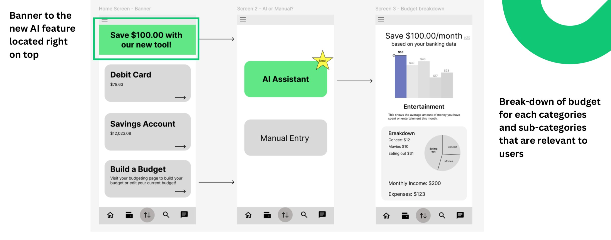
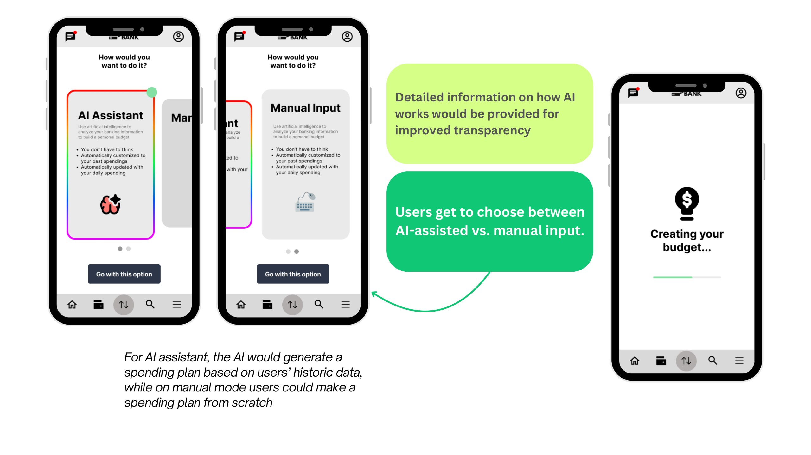
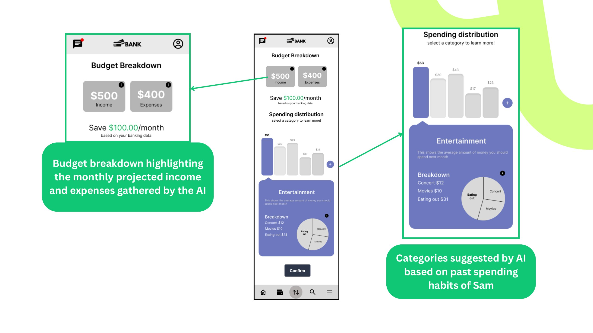
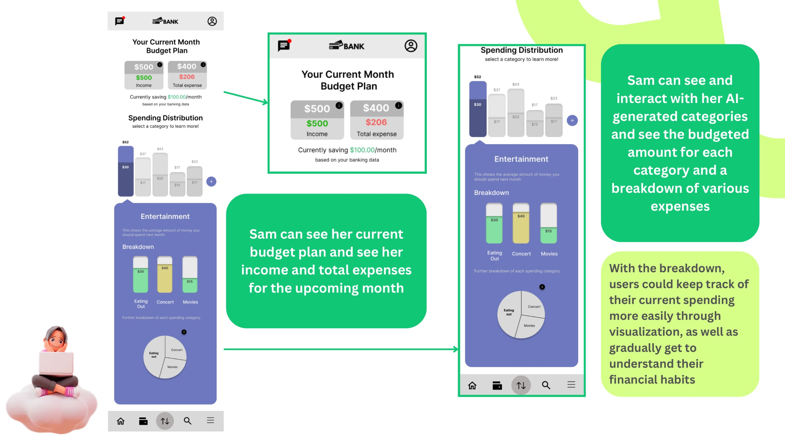

Keylime Interactive · AI · Fintech · Sponsored project
Making budgeting easier for college students
College students know they should budget, but many don't know where to start or feel motivated to keep going. I led a team of nine UX designers through research and co-design to develop an AI-assisted budgeting experience that makes managing money less overwhelming.

Overview
Key Lime Interactive (KLI) is a UX research and customer experience consulting agency. KLI partnered with our team to explore how financial literacy tools could better support Gen Z college students.
Over 16 weeks, we investigated students' financial behaviors, evaluated existing tools, facilitated workshops, and tested design concepts. The research revealed that students recognized the importance of budgeting but struggled with motivation, financial jargon, and the effort required to get started.
The project delivered research findings, documentation, and mid-fidelity designs for an AI-assisted budgeting feature integrated into an existing banking app.
16-week project plan
The Problem
“I know I should budget, but where do I start?”
Students often manage their money by trying not to spend too much each week, without a clear budget or understanding of their spending habits.
Existing financial tools can make the problem worse. Dense dashboards, unfamiliar terminology, and complicated setup processes overwhelm students who are just beginning to manage their finances.
Students don't necessarily need more financial information. They need a simpler way to turn that information into action.
How might we help college students build healthier financial habits without making budgeting feel like another responsibility?
Process
Milestone 1Understanding financial behaviors
What do college students know about managing their money? We began with literature reviews, student interviews, and online community research to understand financial literacy among Gen Z college students.
I led the literature review and developed the interview protocol, helping establish the research questions that guided our investigation.
Our findings highlighted three recurring challenges:
- Overspending: Students frequently underestimate how much they spend, especially on everyday purchases.
- Limited financial knowledge: Many students lack confidence in budgeting and other personal finance topics.
- Low motivation: Students recognize that budgeting is important but struggle to make it a consistent habit.
Key insight: Awareness isn't the same as action. Students know budgeting matters, but knowledge alone isn't enough to change their behavior.
Milestone 2Why aren't students budgeting?
With the problem better understood, we investigated what prevents students from starting and maintaining a budget.
I designed and facilitated a discovery workshop to explore students' financial behaviors, attitudes, and motivations. Participants reflected on their spending habits and discussed what might encourage them to manage their money differently.

The workshop revealed a disconnect between what students believed they spent and their actual spending habits. Many were surprised by how much money went toward everyday purchases.
Students also acknowledged that budgeting could help them, but weren't convinced the effort was worthwhile. Monetary incentives emerged as a possible motivator, although participants were unsure whether rewards would sustain their interest.
Key insight: The problem wasn't convincing students that budgeting mattered. It was making budgeting easy enough to start and worthwhile enough to continue.
Milestone 3What would students actually use?
How can we motivate college students to budget? To move from research into solutions, I created and facilitated a co-design workshop where students explored potential budgeting tools and identified the features they would find useful.
Three themes stood out:
Automation
Students wanted a tool that could do much of the budgeting work for them rather than requiring constant manual input.
Accessibility
The experience needed to be straightforward, with minimal setup and clear explanations.
Familiarity
Students preferred a budgeting tool inside an app they already used, particularly their banking app.
These findings helped shift our focus away from standalone financial education tools and toward an integrated budgeting experience.


Key insight: Students were more willing to budget when the tool fit into their existing habits instead of asking them to create new ones.
Comparing concepts
The team explored two directions: a receipt scanner that rewarded users for tracking purchases, and an AI-assisted budgeting tool that generated personalized spending plans.


We tested both concepts with 12 college-aged participants.
Receipt scanner
Participants liked the simplicity and potential cashback rewards. However, many rarely kept receipts and worried they would forget to scan them.
AI budgeting assistant
Participants appreciated spending visualizations and the option to choose between automated and manual budgeting. However, some questioned whether they could trust AI with their finances.
Preferences were split 50/50. Rather than choosing based on popularity alone, we returned to our research. The AI concept better addressed students' desire for automation and filled a clearer gap in existing financial tools.
Key decision: Move forward with AI-assisted budgeting, while reducing unnecessary steps and giving users more control over the experience.
Milestone 4Designing and testing the experience
The team translated the research into low-fidelity wireframes for a budgeting feature within a mobile banking app.
The experience allowed students to choose between an AI-generated spending plan and creating their own budget. Spending categories, visualizations, and budget breakdowns helped make financial information easier to understand.

We evaluated the wireframes with 12 college-aged participants, focusing on usability, comprehension, and trust in AI. Testing uncovered several opportunities for improvement:
inside a banking app
budget breakdowns
explanations before AI
spending charts confusing
about how money is handled
Key insight: Students were open to AI managing their budgets, but they needed to understand what it was doing and feel in control of their financial decisions.
The feedback guided the team's mid-fidelity designs, prioritizing clearer explanations, more understandable visualizations, and greater transparency.

The Solution
A budgeting tool that does the hard part for you. The final concept integrates AI-assisted budgeting into an existing mobile banking experience. Instead of asking students to learn an entirely new platform, it brings budgeting into a familiar environment.
Four design decisions connect the solution directly to our research.
Start where students already bank
The budgeting feature is accessible from the banking app's home screen, reducing the effort required to discover and use it.
Choose AI or manual budgeting
Students can generate a personalized spending plan using their financial history or create their own budget from scratch. Automation is available without taking away user control.

Understand where the money goes
Spending categories and visual breakdowns help students see how their money is distributed without navigating overwhelming financial dashboards.


Make AI more transparent
Clear explanations describe how AI-assisted budgeting works, helping students understand the feature before relying on it.
The result is a mid-fidelity budgeting concept designed around the needs students expressed throughout the research process: less effort, greater clarity, and more control.
Results
Research and testing helped the team narrow a broad financial literacy challenge into a focused budgeting solution.
The project concluded with research documentation and mid-fidelity designs delivered to Key Lime Interactive. Further testing would be needed to establish whether the concept improves long-term budgeting habits.
Impact & learnings
My impact
Coordinated project milestones, delegated responsibilities, and helped keep the team aligned throughout research, ideation, and design.
Led sponsor meetings, served as the team's primary point of contact, and communicated research progress and design direction.
Led the literature review and developed interview protocols to investigate students' financial knowledge, behaviors, and motivations.
Created the discovery and co-design workshop protocols and led both sessions, helping turn participant feedback into actionable design opportunities.
What I learned
We initially explored different ways to motivate students, but research showed that reducing effort mattered just as much as offering incentives.
Giving students the opportunity to explore solutions helped uncover preferences for automation, familiar platforms, and user control.
A 50/50 concept testing result didn't mean the directions were equally strong. Looking across research methods helped us make a more informed decision.
Coordinating nine designers taught me the importance of clear responsibilities, consistent communication, and giving team members space to contribute.
Limitations & next steps
Limitations
Next steps
AI trust still needs work. Although participants trusted AI budgeting inside a banking app, some wanted clearer explanations of how the technology would manage their financial information.
1Further refine AI transparency and test whether students understand how automated spending plans are generated.
Financial visualizations caused confusion. Some participants struggled to distinguish between current spending and future budget allocations.
2Refine the charts and validate comprehension through additional usability testing.
The concept wasn't tested over time. Our testing evaluated reactions to designs, not whether students would consistently use the tool or improve their financial habits.
3Test a functional prototype over a longer period to evaluate adoption, sustained engagement, and budgeting behavior.